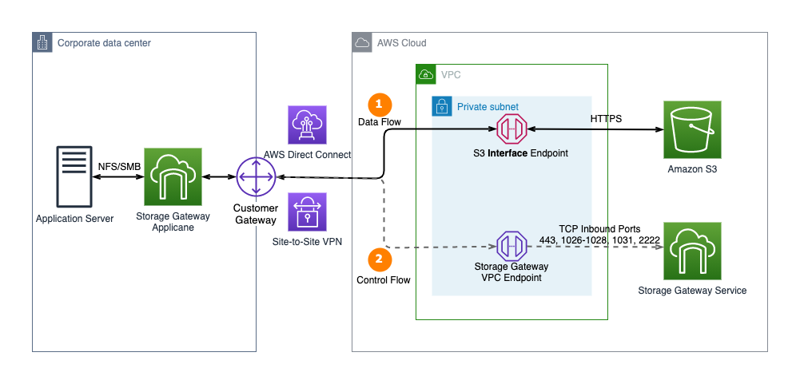

Beschreibung
AWS Storage Gateway spielt eine zentrale Rolle bei der nahtlosen Verknüpfung von lokalem Speicher und den umfangreichen Speicheroptionen in der AWS-Cloud. Diese Plattform fungiert als verlässliche Brücke zwischen den bestehenden lokalen Infrastrukturen und den vielfältigen Speichermöglichkeiten, die die AWS-Cloud bereitstellt. Durch diese Integration wird ein äußerst effizienter Datenaustausch für eine Vielzahl von Anwendungsfällen ermöglicht, darunter Cloud-Backups und der lokale Zugriff auf Daten in der Cloud.
Die AWS Storage Gateway-Lösung eröffnet Unternehmen die Möglichkeit, ihre lokale Speicherinfrastruktur nahtlos mit der leistungsstarken und flexiblen Speicherplattform von AWS zu verbinden. Diese Integration bietet einen reibungslosen Datenaustausch und eröffnet neue Wege für die Verwaltung und Sicherung von Daten in hybriden Umgebungen. Damit ermöglicht die Plattform eine effiziente Nutzung von Cloud-Ressourcen und trägt gleichzeitig dazu bei, die Gesamtbetriebskosten zu optimieren.
Mit AWS Storage Gateway können Unternehmen ihre Daten nahtlos zwischen lokalen Systemen und der Cloud verschieben, ohne dass dabei komplexe manuelle Prozesse erforderlich sind. Diese einfache und dennoch leistungsstarke Lösung erleichtert die Implementierung von Cloud-Strategien und ermöglicht es Unternehmen, von den Vorteilen der Skalierbarkeit, Flexibilität und Sicherheit der AWS-Cloud zu profitieren.
Tape Gateway, File Gateway und Volume Gateway sind die drei Hauptkomponenten des AWS Storage Gateways, die jeweils spezifische Lösungen für unterschiedliche Anforderungen bieten.
* Tape Gateway: Diese Komponente ist darauf ausgerichtet, Bandsicherungen nahtlos in die Cloud zu verlagern. Sie emuliert virtuelle Tape-Laufwerke und Medienbibliotheken, die eine Integration bestehender Backup-Anwendungen mit Cloud-Speicher ermöglichen.
* File Gateway: Der File Gateway dient dazu, den lokalen Speicherbedarf durch Cloud-gestützte Dateifreigaben zu reduzieren. Er präsentiert Cloud-basierten Speicher als Dateifreigabe für lokale Anwendungen und speichert Daten lokal, um einen schnellen Zugriff zu ermöglichen.
* Volume Gateway: Diese Komponente bietet blockbasierte Speicherung für lokale Anwendungen mit nahtloser Cloud-Integration. Sie erlaubt das Anhängen von Cloud-Volumes an lokale Server als iSCSI-Geräte und ermöglicht eine nahtlose Integration von Cloud-Speicher für Backup, Migration und Disaster Recovery.
Die Vielfalt dieser Gateways ermöglicht es Unternehmen, spezifische Anforderungen in Bezug auf Speicherung, Zugriff und Sicherung zu erfüllen.
Tape Gateway konzentriert sich auf Backup-Anwendungen, während File Gateway die lokale Speicherkapazität durch Cloud-gestützte Dateifreigaben reduziert. Volume Gateway hingegen bietet blockbasierte Speicherung mit nahtloser Cloud-Integration für Backup und Disaster Recovery. Durch die Kombination dieser Gateways können Unternehmen eine umfassende und skalierbare Lösung für ihre Speicheranforderungen implementieren.
Schlüsselwörter
> > > Schlüsselworte bzw. Schlagworte sollen uns dabei helfen, einen Service leichter zu erkennen, wenn es um Prüfungsfragen geht. Ließ dir die Fragen richtig durch und achte auf folgende Schlüsselworte. Sie können dir bei der Beantwortung der Fragen helfen.
- Dateisysteme: Amazon EFS ermöglicht die Erstellung von skalierbaren und elastischen Dateisystemen, die von mehreren EC2-Instanzen gleichzeitig genutzt werden können.
- Network File System (NFS): EFS basiert auf dem NFS-Protokoll und bietet dadurch eine standardisierte und weit verbreitete Schnittstelle für den Dateizugriff.
- Regionale Verwendung: EFS ist in der Lage, in einer AWS-Region über mehrere Verfügbarkeitszonen hinweg bereitzustellen, um Hochverfügbarkeit und Zuverlässigkeit sicherzustellen.
- Elasticity: EFS passt sich automatisch an die Größe der gespeicherten Daten an, ohne dass manuelle Anpassungen erforderlich sind.
- Performance: EFS bietet skalierbare Leistung, die mit der Anzahl der verwendeten Dateisysteme und der Datenmenge skaliert.
- Zugriffskontrolle: AWS Identity and Access Management (IAM) kann verwendet werden, um den Zugriff auf Amazon EFS zu steuern.
- Encryption: EFS bietet die Möglichkeit, Daten im Ruhezustand mit AWS Key Management Service (KMS) zu verschlüsseln.
- Infrequent Access (IA) Storage Class: Die Möglichkeit, Infrequent Access Storage Class zu verwenden, um Kosten für selten genutzte Daten zu reduzieren.
- Lifecycle Management: Automatisches Verwalten der Kosten durch Verwendung von Lifecycle-Managementrichtlinien für Dateisysteme.
- Mount Targets: Konfigurierbare Mount Targets in den Verfügbarkeitszonen, um den Zugriff auf EFS in verschiedenen Zonen zu ermöglichen.
- AWS Backup Integration: Integration mit AWS Backup zur Sicherung und Wiederherstellung von Amazon EFS-Dateisystemen.
- AWS CloudFormation Integration: EFS kann über AWS CloudFormation verwaltet und bereitgestellt werden.
- File Sync: AWS DataSync kann für die schnelle und sichere Übertragung großer Datenmengen zwischen lokalen Speicherorten und Amazon EFS verwendet werden.
Grafische Erklärung
Prüfung Fragen
- Welche verschiedenen Gateway-Typen werden vom AWS Storage Gateway Service unterstützt?
- Aufgrund gesetzlicher Vorgaben muss ein Unternehmen Daten verschlüsseln, wenn sie die verschiedenen Ebenen seiner AWS-Architektur durchlaufen. Das Unternehmen prüft die Fähigkeiten der verschiedenen AWS-Services und ihre Verschlüsselungsoptionen. Welche der folgenden Services sind standardmäßig verschlüsselt und erfordern keinen Benutzereingriff zur Aktivierung der Verschlüsselung?
- Welche Funktion erfüllt das AWS Storage Gateway hauptsächlich?